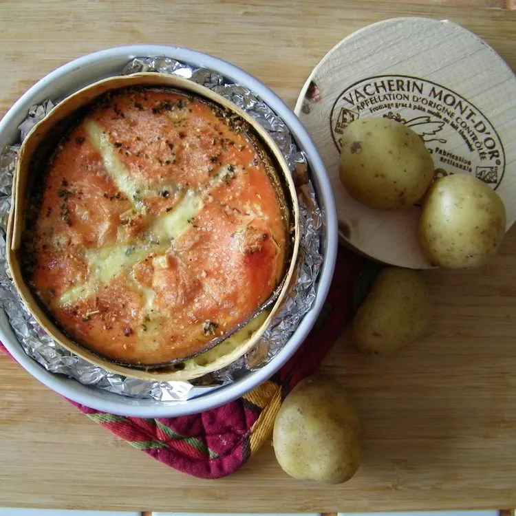

Garlicky Baked Brie

Description
This yummy, warm baked Brie has a garlicky center with a touch of sweet red pepper jelly topping. Serve with fresh baguette or crackers. Your guests will be begging for the recipe!
Ingredients
1 (9 inch) wheel Brie cheese
1 ½ tablespoons red pepper jelly, divided
Steps
Preheat oven to 350 degrees F (175 degrees C).
Cut Brie cheese round in half lengthwise, creating two thinner wheels. Spread crushed garlic on cut surface of 1 half; top garlic layer with 1 1/2 teaspoons red pepper jelly. Place the other Brie cheese half on top of filling. Spread remaining 1 tablespoon red pepper jelly on top of Brie cheese; place in a round casserole dish.
Bake in the preheated oven until rind begins to soften, about 15 minutes.